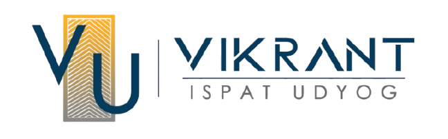

TATA Tiscon
High-strength reinforcement solutions for residential, commercial and infrastructure construction.
Explore productA dependable distribution partner for steel, building materials and industrial solutions. Connecting businesses with trusted Tata product brands and responsive supply support.
*Portfolio references published by Vikrant Group; confirm current availability with our team.

Different capabilities, one shared commitment to quality, relationships and progress.
Steel distribution and allied product solutions for construction, industry and trade.
Explore company ↗
A group business contributing to the wider steel and industrial ecosystem.
Explore company ↗Steel and alloys business within the growing Vikrant Group portfolio.
Explore company ↗ Part of Vikrant Group
Part of Vikrant GroupVikrant Iron Private Limited is part of the Vikrant Group, a business with deep roots in the steel trade. Established in 2003, Vikrant Iron has built its role around the distribution of steel, wires, tools and related building-material solutions.
With customer-centricity at its core, the business works to make quality products accessible to customers across its markets.
Explore a diverse portfolio of Tata Steel products for construction, infrastructure, manufacturing, agriculture and everyday applications.
High-strength reinforcement solutions for residential, commercial and infrastructure construction.
Explore product
Structural steel sections designed for strength, fabrication flexibility and modern projects.
Explore product
Durable hand tools for agricultural, gardening and general-purpose applications.
Explore productShare your requirement with our team and let’s take it forward.
Reliable products matter. So does the partner behind the supply.
Access to a wide range of established Tata Steel product brands for diverse requirements.
A focus on understanding customer needs and helping identify suitable product options.
Supported by the experience and business network of the Vikrant Group.